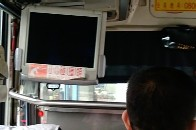
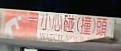
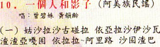

（p'eng4）はモノがぶつかると云う意味。麻雀では無くてはならない用語だが、日本ではまったく使われない。先人の考察で意味は知っていたし、「石が並ぶ」という構成からもなんとなく想像もできる。 （p'eng4）はモノがぶつかると云う意味。麻雀では無くてはならない用語だが、日本ではまったく使われない。先人の考察で意味は知っていたし、「石が並ぶ」という構成からもなんとなく想像もできる。
あるときσ(-_-)でもキチンと調べてみようと、愛用の小サイズの辞書を開いてみたが載っていない。（当然だわな）と思いつつ、大字源（角川書店）を開いた。大字源といえば厚さ８センチ、重さ５キロほどある。片手で持つのも ちと大変。ところがそんな大きな辞書にも載っていない。
そんなマイナーな漢字なのかと思いつつ、伝家の宝刀 「大漢和辞典（諸橋轍次・大修館）を持ち出した。おぉ さすがは「大漢和」、ちゃんと載っていた（八巻p387）.もちろん先人の解説通り、「つく、衝突する、出逢うの意」とあった。その用例として
頭＝頭を打ち当てる
死＝柱や壁に頭を打ちつけて死ぬ
和＝紙牌の戯。骨牌（かるた）の１種。60枚を一組として、４人で相闘（たたかわ）すもの。
などがあった。なるほろ、頓死（とんし）があれば死もあるのか。(^-^；※「頓死」は“急に死ぬ”の意。「頓服（とんぷく）」は“急いで飲む（服用）”の意。頭ぐらいならいいが、死ではたまらんな....和も、麻雀の前身ゲームとして有名じゃん。これですっかり満足し、それっきり用例のことも忘れてしまっていた。
先日、台湾へ行ってきた。台中でバスに乗って驚いた。
 
おお、「頭」がこんなところにあった(^-^)v ※「小心（シャオシン）」は“注意”の意。
数日後、日月譚（にちげつたん＝リーユエタン）を観光をした（“日月”を縮めて明譚（ミンタン）とも通称するそうだ）。台湾有数の観光地だけあって、さすがに綺麗だった。
湖畔をめぐっていると、新婚カップルが記念撮影をしていた（中国では、野外の綺麗なところで記念写真を撮る習慣がある）。
てな話はさておいて、湖のほとりで少数民族の歌謡CDを販売していたので５枚ほど買いこんだ。帰国してから毎日 聞いているが、ある日 その中の１枚の歌詞カードの中にもがあるのを発見した。

|